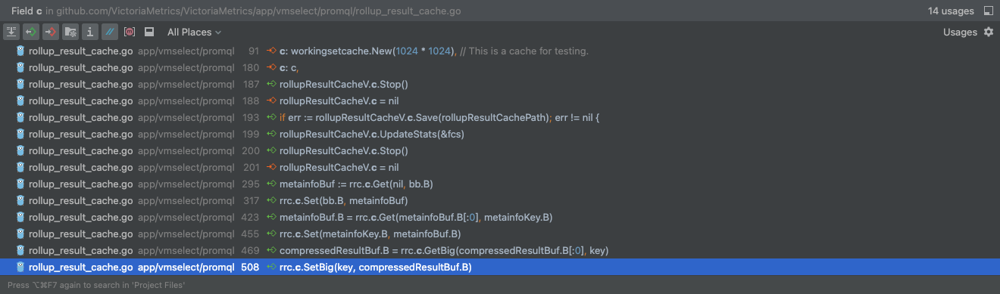
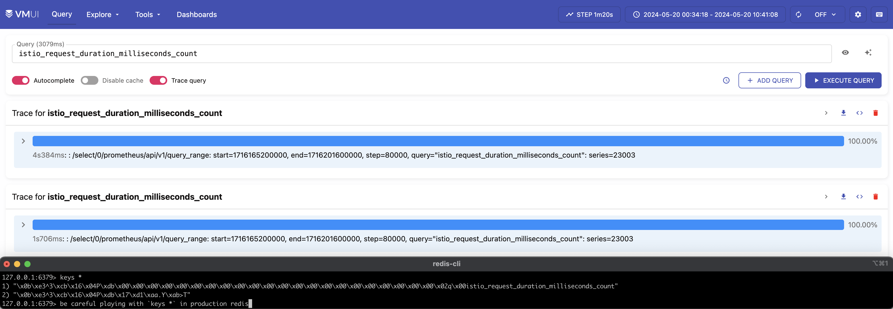
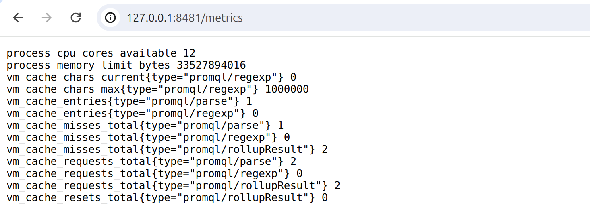

用 Interface 扩展 Go 应用：以 VictoriaMetrics 实现 Redis 缓存为例
VictoriaMetrics 的缓存问题
VictoriaMetrics 是一个 Metrics 监控的解决方案，它由几个关键组件构成：
- vmagent 负责数据采集，并发往 vminsert；
- vminsert 负责解码数据，并根据一致性哈希发往不同 vmstorage 节点；
- vmstorage 负责将数据写入磁盘，并提供查询功能；
- vmselect 负责向多个 vmstorage 节点查询数据，并聚合它们的返回结果提供给用户。
vmselect 处于负载均衡之后，每个 vmselect 的节点都是平等的，相同的查询请求可能会被不同的 vmselect 处理。vmselect 中存在一些缓存机制，在这种场景下，每个 vmselect 节点的缓存都有可能保存相同的内容，因此内存资源使用并不是最优的。
我曾经在 Issue #5056 与 @hagen1778（VictoriaMetrics 的 Maintainer）聊过，大家给出了不同的方案：
- 在 LoadBalancer 实现定制化的负载均衡策略，使得不同的查询语句由不同的 vmselect 节点负责；
- 让多个 vmselect 节点共享相同的外部缓存（例如 Redis、Memcached）；
- 既然 vmselect 节点互相知道对方的存在，那就让 vmselect 转发请求，从相邻的 vmselect 节点获取缓存（这和 Redis 中的
ASK和MOVED有点像）。
尽管上游尚未对解决方案达成一致，我们还是基于优化资源使用的目的为内部的 vmselect 实现了 Redis 缓存支持。我想在这里分享一下完整实现的过程，以及 Go 语言中的 Interface 是怎样减少改动量的。
观察
在上一篇博客，我介绍过 vmselect 中的 Rollup Result Cache，对于一个在时间范围 [a, b] 上的查询，vmselect 将其结果（Rollup Result）缓存，如果未来相同查询需要获取重叠的时间范围数据，例如 [a+5, b+5] 中 [a+5, b] 是与之前缓存重叠的，那么这部分数据就无需再次查询。
我们的目标是将 Rollup Result Cache 从进程内缓存变为外部缓存（Redis），所以观察 Rollup Result Cache 的调用情况：

非常棒，看起来只有几个方法被使用到了，他们分别是：Get、Set、GetBig、SetBig、Stop、UpdateStats、Save。我的扩展的思路是：
- 设计一个包含这些方法的 Interface，叫
rollupResultCacheClient； - 将原有对
*workingsetcache.Cache实例的调用修改为对rollupResultCacheClientInterface 的调用； - 为
rollupResultCacheClientInterface 提供新的实现； - 启动时按照配置选择
rollupResultCacheClient使用哪种实现。
开发
定义 Interface
定义 Interface 非常简单，只需要将使用到的方法签名收集起来：
type rollupResultCacheClient interface {
Get(dst, key []byte) []byte
Set(key, value []byte)
GetBig(dst, key []byte) []byte
SetBig(key, value []byte)
Save(filePath string) error
Stop()
UpdateStats(fcs *fastcache.Stats)
}
我们可以看到其中一些方法可能不是每种扩展实现都需要的，例如 Save、Stop，这没关系，我们先将它保留。
有了 Interface，原有对 *workingsetcache.Cache 的使用就可以变成对 Interface 的使用了：
type rollupResultCache struct {
//c *workingsetcache.Cache
c rollupResultCacheClient
}
如果担心改动有问题，我们可以在这时编译运行 vmselect，看看是否一切正常。
添加 Redis 的实现
接下来按照接口的定义，实现对应的 Redis 调用方法。
首先初始化 Redis Client：
type RedisRollupResultCacheClient struct {
c redis.UniversalClient
}
func NewRedisClient() *RedisRollupResultCacheClient {
return &RedisRollupResultCacheClient{
c: redis.NewUniversalClient(&redis.UniversalOptions{
Addrs: []string{"127.0.0.1:6379"},
}),
}
}
我们可以观察到，Get/Set 和 GetBig/SetBig 显然是在做相同的动作，只是 GetBig/SetBig 是针对更大（超过 64KiB）的对象。所以我们先屏蔽一定的复杂度，在 Redis 实现中只实现简单的 Get/Set，让 GetBig/SetBig 调用 Get/Set 即可。
// Get 使用 Redis GetEX 查询缓存, 如果命中, TTL 会被重置到 1 分钟
func (rc *RedisRollupResultCacheClient) Get(dst, key []byte) []byte {
dst, err := rc.c.GetEx(context.TODO(), string(key), time.Minute).Bytes()
if err != nil && !errors.Is(err, redis.Nil) {
logger.Errorf("get rollup result cache from redis failed: %v", err)
}
return dst
}
// Set 使用 Redis Set 创建/覆盖缓存, 并设置 1 分钟 TTL 时间
func (rc *RedisRollupResultCacheClient) Set(key, value []byte) {
if err := rc.c.Set(context.TODO(), string(key), value, time.Minute).Err(); err != nil {
logger.Errorf("set rollup result cache to redis failed: %v", err)
}
return
}
func (rc *RedisRollupResultCacheClient) GetBig(dst, key []byte) []byte {
return rc.Get(dst, key)
}
func (rc *RedisRollupResultCacheClient) SetBig(key, value []byte) {
rc.Set(key, value)
}
// 下面的方法先不关注
func (rc *RedisRollupResultCacheClient) Save(filePath string) error { return nil }
func (rc *RedisRollupResultCacheClient) Stop() {}
func (rc *RedisRollupResultCacheClient) UpdateStats(fcs *fastcache.Stats) { return }
可以注意到，这些实现非常的粗糙，例如使用硬编码的 Redis 地址、Set 超时时间等。没关系，这些都会在后续进行整理。
现在，我们需要验证一下这些简易的实现是否可行。修改初始化内存缓存的代码，让它直接变成使用 Redis Client：
rollupResultCacheV = &rollupResultCache{
// c: c,
c: rediscache.NewRedisClient(),
}
然后编译运行 vmselect，看看是否一切功能都完好：
- 运行：
go run ./app/vmselect/ --storageNode=10.**.**.***:8401； - 访问
http://127.0.0.1:8481/select/0/vmui，打开 Trace query 并尝试重复查询一个语句； - 访问 Redis 查看是否有缓存。

可以看到第二次查询时耗时从 4.384 秒降低到了 1.706 秒，并且 Redis 中也出现了一些 Item。很好，看起来一切都是正常的。
整理代码
前文的修改是为了快速实现核心功能，而很多旁路功能还要进行完善：
- 用户配置、Flags、初始化逻辑、优雅退出逻辑；
- Rollup Result Cache 监控指标。
我们先来为新的 Cache 设计对应参数。参考 Thanos 的参数命名，我们为 vmselect 提供两个新的参数：
cacheType = flag.String("cacheType", "in-memory", "Cache type for rollup result. Available options: in-memory(default), redis.")
cacheRedisAddr = flag.String("cacheRedisAddr", "", "Address for redis cache. It's only available when `cacheType` is set to `redis`. Usage: -cacheRedisAddr=127.0.0.1:6379")
cacheRedisTTL = flag.Duration("cacheRedisTTL", time.Minute, "TTL for redis cache items. It's only available when `cacheType` is set to `redis`. Usage: -cacheRedisTTL=1m (default)")
同样地，在 InitRollupResultCache 和 StopRollupResultCache 方法中，接收这些参数，并且 switch-case 处理：
func InitRollupResultCache(cacheType, cachePath, cacheRedisAddr string, cacheRedisTTL time.Duration) {
var c rollupResultCacheClient
switch cacheType {
case "in-memory":
// 将原有的初始化代码移到这里
...
case "redis":
c = rediscache.NewRedisClient(cacheRedisAddr, cacheRedisTTL) // NewRedisClient 也修改为传入地址参数
}
rollupResultCacheV = &rollupResultCache{
c: c,
}
}
func StopRollupResultCache(cacheType string) {
switch cacheType {
case "in-memory":
// 将原有的初始化代码移到这里
...
case "redis":
// 与 in-memory Cache 不同, Redis 的 Stop 方法实际上不进行任何操作.
rollupResultCacheV.c.Stop()
rollupResultCacheV.c = nil
}
}
现在代码看起来整洁多了。
那么接下来处理缓存相关的指标。Rollup Result Cache 原有的监控指标主要由 fastcache.Stats 提供，包括 Item 数量、体积、缓存命中率等。对于 Redis 实例，通常认为使用者会有额外的监控，因此不需要提供资源使用情况的指标，仅需要记录缓存命中率。
首先我们给 RedisRollupResultCacheClient 添加统计字段，并且在 Get 方法中记录它们：
type RedisRollupResultCacheClient struct {
c redis.UniversalClient
ttl time.Duration
// 统计字段
calls uint64
misses uint64
}
func (rc *RedisRollupResultCacheClient) Get(dst, key []byte) []byte {
rc.calls++ // 记录调用次数
...
if errors.Is(err, redis.Nil) {
rc.misses++ // 如果没有读取到结果，记录未命中次数
} else if err != nil {
...
}
...
}
func (rc *RedisRollupResultCacheClient) GetCalls() uint64 { return rc.calls }
func (rc *RedisRollupResultCacheClient) GetMisses() uint64 { return rc.misses }
最后参考指标暴露的方法，在 InitRollupResultCache 中修改：
func InitRollupResultCache(cacheType, cachePath, cacheRedisAddr string, cacheRedisTTL time.Duration) {
...
switch cacheType {
case "in-memory":
...
case "redis":
...
metrics.GetOrCreateGauge(`vm_cache_requests_total{type="promql/rollupResult"}`, func() float64 {
return float64(redisClient.GetCalls())
})
metrics.GetOrCreateGauge(`vm_cache_misses_total{type="promql/rollupResult"}`, func() float64 {
return float64(redisClient.GetMisses())
})
...
}
...
}
效果对比
现在让我们来看看最终效果，用户需要怎样使用不同的缓存。
In-memory 缓存依然与原来的使用方式一致：
# 使用内存缓存, 退出时缓存数据不持久化
./vmselect -storageNode=127.0.0.1:8401
# 使用内存缓存, 指定退出时缓存数据的持久化路径
./vmselect -storageNode=127.0.0.1:8401 -cacheDataPath=/my/tmp/dir
# (新) 使用内存缓存, 指定退出时缓存数据的持久化路径
./vmselect -storageNode=127.0.0.1:8401 -cacheType=in-memory -cacheDataPath=/my/tmp/dir
Redis 缓存与参数使用：
# (新) 使用外部缓存
./vmselect -storageNode=127.0.0.1:8401 -cacheType=redis -cacheRedisAddr=127.0.0.1:6379
# (新) 使用外部缓存, 指定 Item 的过期时间
./vmselect -storageNode=127.0.0.1:8401 -cacheType=redis -cacheRedisAddr=127.0.0.1:6379 -cacheRedisTTL=5m
在进行一些查询后，可以从 vmselect 暴露的指标观察缓存使用情况： 
总结
这篇博客以最近为公司内的 VictoriaMetrics 开发缓存功能的实践为基础，介绍了 Go Interface 在抽象、扩展上的基础用法。你可以通过以下链接查看完整代码与改动部分：
- feature/vmselect-ext-cache 分支；
- diff 代码。
VictoriaMetrics 的社区非常活跃，对 Issue 的答复和处理也比较及时，希望这篇博客可以鼓励更多的 Gopher 探索和参与到 VictoriaMetrics 社区中。